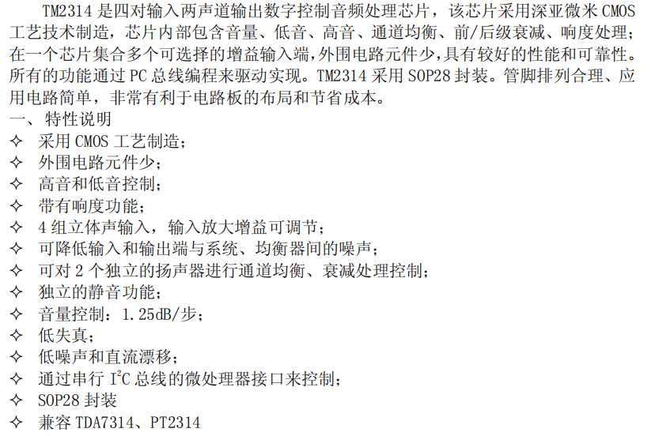

1. TM2314 芯片简介
当时是想用数字方法实现对输入音频的调控（因为之前模电做过硬件的方案，太复杂了），在网上找了一会儿，决定用TM2314这一块芯片，用stm32f103c8t6通过I2C来控制芯片,具体芯片的功能见下图。

TM2314 功能特性与内部框图（摘自数据手册）代码具体实现的功能有输入通道选择、输入增益设置、响度控制和音调等级，当然，音调啥的左右声道可以独立调节，只是考虑到实际应用，我就写的左右声道一起调整的。
2. 头文件 `tm2314.h`
#ifndef __TM2314_H
#define __TM2314_H
#include "stm32f10x.h"
#include "Delay.h"
#define TM2314_ADDR 0x88
//输入通道选择
typedef enum {
TM2314_IN1 = 0x00,
TM2314_IN2 = 0x01,
TM2314_IN3 = 0x02,
TM2314_IN4 = 0x03
} TM2314_Input_t;
//输入增益设置 (0dB 到 11.25dB)
typedef enum {
TM2314_GAIN_0dB = 0x00,
TM2314_GAIN_3_75dB = 0x08,
TM2314_GAIN_7_5dB = 0x10,
TM2314_GAIN_11_25dB = 0x18
} TM2314_Gain_t;
//响度控制
#define TM2314_LOUDNESS_ON 0x00
#define TM2314_LOUDNESS_OFF 0x04
//音调等级 (-14dB 到 +14dB)
typedef enum {
BASS_TREBLE_N14 = 0, BASS_TREBLE_N12, BASS_TREBLE_N10, BASS_TREBLE_N8,
BASS_TREBLE_N6, BASS_TREBLE_N4, BASS_TREBLE_N2, BASS_TREBLE_0,
BASS_TREBLE_P2, BASS_TREBLE_P4, BASS_TREBLE_P6, BASS_TREBLE_P8,
BASS_TREBLE_P10, BASS_TREBLE_P12, BASS_TREBLE_P14
} TM2314_Level_t;
void TM2314_Init(void);
void TM2314_SetVolume(uint8_t vol); // 0-63, 63为最大音量
void TM2314_SetAudioSwitch(TM2314_Input_t input, TM2314_Gain_t gain, uint8_t loudness);
void TM2314_SetBass(TM2314_Level_t level);
void TM2314_SetTreble(TM2314_Level_t level);
void TM2314_SetSpeakerAtt(uint8_t att); // 0-31, 0为不衰减, 31为静音
#endif
3. 源文件 `tm2314.c`
#include "stm32f10x.h"
#include "tm2314.h"
// TM2314 音调控制非线性查找表
static const uint8_t TONE_LUT[] = {
0x00, 0x01, 0x02, 0x03, 0x04, 0x05, 0x06, 0x07, // -14dB 到 0dB
0x0E, 0x0D, 0x0C, 0x0B, 0x0A, 0x09, 0x08 // +2dB 到 +14dB
};
// PB6-SCL, PB7-SDA
static void TM2314_I2C_Init(void) {
GPIO_InitTypeDef GPIO_InitStructure;
I2C_InitTypeDef I2C_InitStructure;
RCC_APB2PeriphClockCmd(RCC_APB2Periph_GPIOB, ENABLE);
RCC_APB1PeriphClockCmd(RCC_APB1Periph_I2C1, ENABLE);
GPIO_InitStructure.GPIO_Pin = GPIO_Pin_6 | GPIO_Pin_7;
GPIO_InitStructure.GPIO_Mode = GPIO_Mode_AF_OD;
GPIO_InitStructure.GPIO_Speed = GPIO_Speed_50MHz;
GPIO_Init(GPIOB, &GPIO_InitStructure);
I2C_InitStructure.I2C_Mode = I2C_Mode_I2C;
I2C_InitStructure.I2C_DutyCycle = I2C_DutyCycle_2;
I2C_InitStructure.I2C_OwnAddress1 = 0x00;
I2C_InitStructure.I2C_Ack = I2C_Ack_Enable;
I2C_InitStructure.I2C_AcknowledgedAddress = I2C_AcknowledgedAddress_7bit;
I2C_InitStructure.I2C_ClockSpeed = 100000; // 100kHz
I2C_Init(I2C1, &I2C_InitStructure);
I2C_Cmd(I2C1, ENABLE);
}
static void TM2314_WriteByte(uint8_t data) {
while(I2C_GetFlagStatus(I2C1, I2C_FLAG_BUSY));
I2C_GenerateSTART(I2C1, ENABLE);
while(!I2C_CheckEvent(I2C1, I2C_EVENT_MASTER_MODE_SELECT));
I2C_Send7bitAddress(I2C1, TM2314_ADDR, I2C_Direction_Transmitter);
while(!I2C_CheckEvent(I2C1, I2C_EVENT_MASTER_TRANSMITTER_MODE_SELECTED));
I2C_SendData(I2C1, data);
while(!I2C_CheckEvent(I2C1, I2C_EVENT_MASTER_BYTE_TRANSMITTED));
I2C_GenerateSTOP(I2C1, ENABLE);
}
void TM2314_Init(void) {
TM2314_I2C_Init();
Delay_ms(100); // 等待芯片内部参考电压稳定
// 初始状态为静音
TM2314_SetSpeakerAtt(31);
TM2314_SetVolume(0);
}
//设置主音量 (0-63)
void TM2314_SetVolume(uint8_t vol) {
if(vol > 63) vol = 63;
uint8_t att = 63 - vol;
TM2314_WriteByte(att & 0x3F);
}
void TM2314_SetAudioSwitch(TM2314_Input_t input, TM2314_Gain_t gain, uint8_t loudness) {
uint8_t cmd = 0x40 | gain | loudness | input;
TM2314_WriteByte(cmd);
}
void TM2314_SetBass(TM2314_Level_t level) {
uint8_t cmd = 0x60 | TONE_LUT[level];
TM2314_WriteByte(cmd);
}
void TM2314_SetTreble(TM2314_Level_t level) {
uint8_t cmd = 0x70 | TONE_LUT[level];
TM2314_WriteByte(cmd);
}
//左右声道同步衰减
//att: 0 (不衰减) 到 31 (静音)
void TM2314_SetSpeakerAtt(uint8_t att) {
if(att > 31) att = 31;
// 左声道
TM2314_WriteByte(0xC0 | att);
// 右声道
TM2314_WriteByte(0xE0 | att);
}
以上就是结合 TM2314 数据手册进行的驱动开发记录，如果你想做一个简易的音频处理模块，可以参考一下，希望能对你有所帮助！